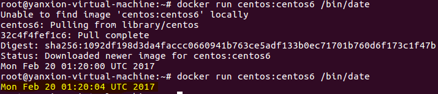
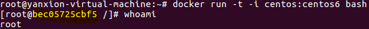
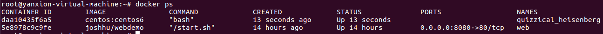
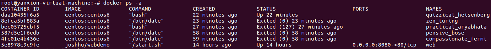
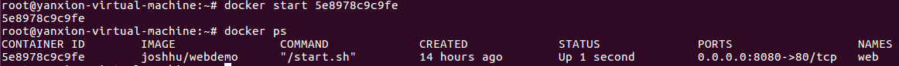
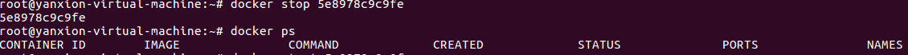
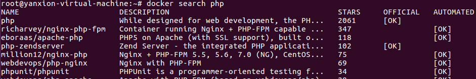
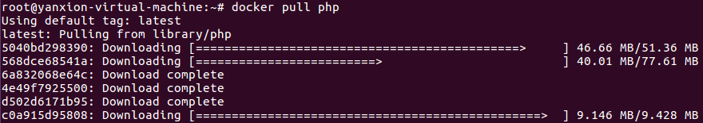
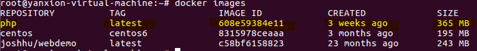
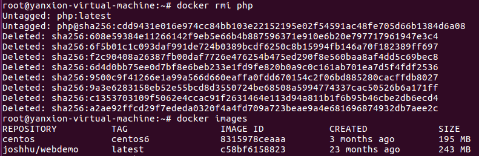

[ubuntu]-docker
參考資料：Docker學習筆記Docker Install
Curl –sSL https://get.docker.com/ | sudo sh
Docker 實作
docker run [repo name]:[tags] [command]
EX: Docker run centos:centos6 /bin/date
EX: Docker run centos:centos6 bash
參考資料：Docker Website
Docker Container (容器)
查看現有運行的容器 docker ps
查看所有容器 docker ps –a
Docker 啟動/關閉
Docker start [container ID]
Docker stop [container ID]
Docker Image (映像檔)
搜尋 : Docker search [name]
下載 : Docker pull [NAME]
列出已存在的image : docker images
移除images : Docker rmi [repositroy]
